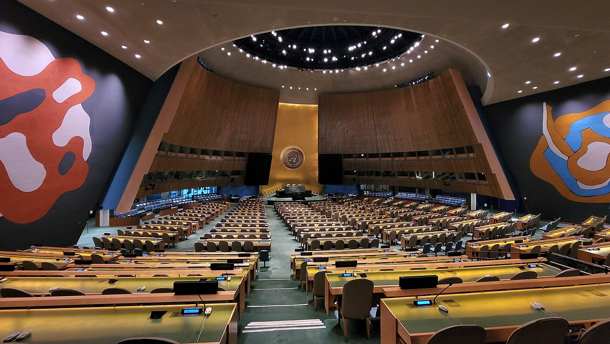

Vol. I · No. 120 · Wednesday, September 23, 2026 · 22 items · ~21 min read
Annihilation or a deal from the podium, two labs cutting prices ninety minutes apart, Brussels buying three years with two oligarchs.
The World · United Nations, New York · cross-spectrum LLCLRR
Trump gives the General Assembly a choice on Iran, a deal or annihilation

The General Assembly hall, where the general debate of the 81st session opened on Tuesday. — Wikimedia Commons
President Trump used the opening day of the to put one question to the hall, in a speech that ran thirty-seven minutes. “I have a big decision to make: Will a deal be made with Iran that lets them rebuild and create a far greater country than it ever was before, maybe one of the greatest in the Middle East or even the world?” he said. “Or do I annihilate the Islamic Republic and do it quickly, never giving them a chance to kill and destroy people and countries again.” He then supplied his own timetable: “I believe we will make a deal right after the election because it does not make sense for them not to,” a line the oil market read as ruling out any settlement before November 3.
“Or do I annihilate the Islamic Republic and do it quickly…”
— Donald Trump, United Nations General Assembly, September 22
The rest of the address worked down a list of open files. The United States would “immediately begin the process of developing a large military presence” in Greenland, he said, including “building two very major military bases,” hours after signing an Arctic security agreement with Denmark and Greenland in the same building. He said Cuba’s government “will fall,” and the Cuban delegation walked out. He called the evil. On Venezuela he said “to the victor belong the spoils,” referring to a Pentagon agreement with a private energy company he named as Nabep for access to 65 billion barrels of reserves, a company the day’s reporting did not otherwise establish. And he told the hall that “the United States totally rejects any attempt to construct a globalist scheme to control artificial intelligence,” adding that the technology ought to be renamed because that “sounds much better” and is “much more accurate.”
The speech landed in a session already thick with valedictions. opened the debate with his final address as Secretary-General, warning that the world’s fault lines are widening. Emmanuel Macron gave his last as French president and used it to argue the opposite case on AI, calling for pooled European investment in an open-source frontier model: “I don’t want anyone to become the vassal of one of the great powers.” Andy Burnham gave his first as British prime minister. Trump also forecast that oil prices “will come plummeting down, even lower than they were at the start of the conflict” once the war ends. NBC News noted that both benchmarks are up more than 60 percent year to date and that analysts dispute the causal chain.
AI · San Francisco
Anthropic and OpenAI ship flagship models ninety minutes apart, and both cut prices
Anthropic released Claude Opus 5.5 on Tuesday. Roughly ninety minutes later OpenAI released GPT-6 Sol and GPT-6 Luna. Both cut prices. Opus 5.5 lists at $4 per million input tokens and $20 per million output, down from $5 and $25, with down 60 percent to $0.20 per million; the company claims 40 percent lower cost on typical workloads and more than 30 percent faster output. GPT-6 Sol prices at $2 and $10, exactly half its predecessor, and Luna at $0.10 and $0.50, also exactly half. OpenAI attributed the cut to caching and inference improvements.
On benchmarks Anthropic claims 66.4 percent on 4.0 against GPT-6 Astra’s 57.9, and 1846 Elo on v2.1 against Claude Fable 5.1’s 1735, while conceding that GPT-6 Astra beats it on AutomationBench and Terminal-Bench-Science. It also published an unusual hedge: “at these levels of capability we’ve found that benchmark margins have become a less reliable guide to real-world differences.” The figure most relevant here is a hallucination-resistance run in which 16 of 18 Opus 5.5 research reports cleared a bar where any invented figure or quote counted as failure, and neither Fable 5.1 nor Opus 5 cleared it on any attempt. Named early testers include , LexisNexis Legal & Professional and Deloitte Consulting, whose chief information officer said that at its lowest effort setting Opus 5.5 caught 72 percent of known bugs in code review against Opus 5’s 56 percent at high effort.
The World · Brussels · single-tier coverage: C
The EU renews its Russia sanctions for three years, and pays for it with Usmanov and Fridman
The regime did not lapse at midnight. sealed a compromise on Tuesday afternoon after roughly two weeks of negotiation, with Latvia, which had blocked the file on Monday, standing aside by way of a . The renewal runs 36 months, replacing the six-month rolling cycle that has governed individual designations since 2014. Latvian Prime Minister Andris Kulbergs put the trade plainly: “Extending the sanctions for 36 months would be the right move. However, the price should not simply be removing two people from the sanctions list.”
The two are Alisher Usmanov, 73, the USM Holdings founder whose fortune Euronews puts at $16.6 billion, and Mikhail Fridman, the Alfa Group co-founder who is pursuing a $16 billion frozen-asset claim against Luxembourg and who has already resigned from the board of . France drove the Usmanov removal, citing national security without detail; Euronews reports the arrangement involved Azerbaijan pardoning two French nationals. Counts of what survives diverge and are printed here rather than reconciled: Euronews says more than 2,600 people, organisations and entities remain listed, Meduza says roughly 3,000. Zelensky objected publicly, saying “every Ukrainian family is counting on EU unity and solidarity.” One diplomat in the room was blunter: “No one is happy about this. But the consensus in the room was that it’s better to maintain the rest of the listings under the regime.”
Artificial Intelligence
The money and the rulemaking moved in opposite directions on the same day.
AI · Stockholm and Berlin
Legal AI reprices twice in one day, at $8.5 billion and under a 263-year-old publisher
Stockholm, where Legora is based. — Wikimedia Commons
Bloomberg reported on Tuesday that Legora, the Swedish legal-AI company formerly called Leya, is in talks to raise at least $300 million at roughly an $8.5 billion valuation. Six months ago it raised $550 million in a Series D at $5.55 billion. That is better than a 50 percent markup on a company selling software into a profession whose billing model the software erodes.
The second repricing came at four o’clock on Wednesday morning in Berlin, and it is the stranger one. Noxtua announced a Series C of more than €100 million in which , its Series B investor, becomes majority shareholder; the Austrian legal publisher MANZ joins as a new investor, and the IOTA Foundation founder Dominik Schiener exits. Valuation was not disclosed. A C.H.BECK executive said the publisher plans “to work very closely with Noxtua, even tying our product strategy to their platform.” Chief executive Leif-Nissen Lundbæk said the company has “quadrupled our team in the past 12 months and quintupled our recent revenue,” on roughly 100 employees and more than 30,000 legal professionals using the product across six European offices, with workspaces opened in Poland, Sweden and the Czech Republic in the past four weeks. Among the investors staying in are .
AI · United Nations, New York
The Security Council takes up AI this afternoon, a day after Washington rejected the project
France, which holds the this month, has convened a high-level session on artificial intelligence and international security for Wednesday afternoon, on the stated ground that the subject has been insufficiently discussed at the United Nations. Sam Altman, Dario Amodei and Hugging Face’s are set to brief. Agence France-Presse describes it as an emergency meeting. Bloomberg reports Altman will use the slot to pitch global technical standards.
It follows Trump’s rejection of exactly that project from the General Assembly rostrum a day earlier. Guterres set the other pole: “Let us resolve that life-and-death decisions must never be surrendered to machines. must have no place in our future.” Macron proposed pooled European investment in open-source frontier models so no country becomes “the vassal of one of the great powers.” More than twenty countries called for binding safety measures; China did not join them. Britain’s Andy Burnham called AI “the key to economic growth.” The session is a .
Markets & Deals
A thin tape for new announcements, a soft two-year, and two structures worth reading closely.
Corporate · New York
CoreWeave closes a $4.2 billion convertible and spends $566 million to cap the dilution
CoreWeave trades on Nasdaq, where the reference price for the conversion was struck. — Wikimedia Commons
CoreWeave completed a private placement of $4.2 billion of 2.875 percent convertible senior notes due 2033 on Tuesday, after the initial purchasers exercised the full $500 million option on top of the $3.7 billion priced on Friday. The deal was upsized twice, from an announced $3.0 billion. It was sold under to qualified institutional buyers. The initial conversion rate of 10.2194 shares per $1,000 implies a conversion price near $97.85, a 22.5 percent to the $79.88 reference close.
The number to read is not the conversion price. CoreWeave paid approximately $566.2 million for , up from the $498.8 million budgeted at the smaller size, setting a cap price of $199.70, a 150 percent premium. Net proceeds were roughly $4.137 billion. Interest runs semiannually from April 2027, maturity is April 2033, and the issuer cannot call before April 2030 and then only on a . The notes are guaranteed by the same subsidiaries that guarantee CoreWeave’s 9.250 percent 2030s and 9.750 percent 2031s, so a 2.875 percent coupon now sits in a stack paying three times that.
Corporate · Washington
The two-year clears at 4.787 percent and two Fed presidents talk about hikes
Treasury sold $69 billion of two-year notes on Tuesday at a high yield of 4.787 percent, the highest at a two-year auction since 2024. The when-issued yield was 4.785, leaving a of two-tenths of a basis point against a recent average near one-tenth. Bid-to-cover came in at 2.63 against a 2.61 average. took 57.79 percent against a 58.6 average, directs 29.2 and dealers 13.19. Yields barely moved into the close: the ten-year at 4.959 percent, the two-year at 4.743, the thirty-year at 5.296, leaving the two-to-ten spread near 22 basis points. The nineteen-year high of 5.041 percent set last week still stands.
The day’s real rates story was spoken rather than auctioned. , speaking in London, said he was “especially attuned to elevated inflation in service-sector industries, and to any evidence that AI data center construction is spilling out of its own lane and raising aggregate output beyond what the economy can absorb,” adding that “if demand overheats, there is no ambiguity about how the Fed needs to respond.” He also mocked the forecasting record: “Originally it was supposed to happen in Q4 2025. Then Q1 2026. Then Q2, then Q3, then Q4, and now sometime in 2027. That’s not a comforting pattern.” Alberto Musalem said additional increases may be needed. Markets put roughly 40 percent on hikes at both remaining 2026 meetings. Brent settled at $99.25, down 1.09 percent, with gold at $4,307.63, off 0.81 percent.
Corporate · Madrid
Platinum closes Urbaser at $6.6 billion, and the clause that made it possible was written first
Platinum Equity announced on Tuesday that its sale of Urbaser, the Spanish environmental services group, to Blackstone Infrastructure and EQT has completed at roughly $6.6 billion. The deal was signed in February, so this is a closing rather than an announcement, and several aggregators were re-syndicating it as new. The buyers take 50 percent each. Platinum bought Urbaser from China Tianying in October 2021 at an enterprise value near $4.2 billion, invested €1.6 billion across capex and acquisitions, did twenty add-ons and thirteen divestitures, and grew backlog by €3.0 billion to more than €15 billion. It kept the Argentine waste business, carrying roughly €80 million of 2025 EBITDA, out of the sale.
The structure is the lesson. The sale followed a refinancing that built in on the senior debt and a , both described as novel in the European financing market. Co-president Louis Samson said the firm takes pride in “combining the latest capital markets tools with a willingness to develop new solutions,” calling the refinancing “thoughtful structuring that created meaningful value for all parties.” Citi and Santander advised Platinum; Latham & Watkins was counsel, with Cuatrecasas on the Spanish side. takes one half, EQT Infrastructure the other.
Corporate · Frankfurt
Persistent clears 83.25 percent of Nagarro and opens Germany’s statutory mop-up window
Galaxy Germany Holding SE, a wholly owned subsidiary of India’s Persistent Systems, published initial results of its voluntary takeover offer for Nagarro SE at three o’clock Tuesday afternoon Frankfurt time. Holders of 7,568,145 shares tendered, about 61.15 percent of capital and votes, which together with a 22.10 percent block bought from Lantano Beteiligungen under a separate purchase agreement brings Persistent to 83.25 percent. The minimum condition was 50 percent plus one share. The price is €81.00 in cash, valuing Nagarro near €1.27 billion against CY2025 revenue of €999.3 million.
What opens now is the , running from Wednesday to midnight on October 6 at the same price. Persistent intends to pursue a as soon as practicable, with closing expected by the end of the first quarter of 2027 subject to remaining regulatory approvals. The deal was papered under a . Khaitan & Co and Hengeler Mueller acted for Persistent, Freshfields for Nagarro with leading, and Talwar Thakore & Associates for Barclays as arranger of a €1.4 billion bridge. Chief executive Sandeep Kalra said the result “confirms its appeal and the strategic logic behind combining Persistent and Nagarro.”
Corporate · South Florida · Miami
Integra closes a $250 million multifamily fund, twice what its Form D said twelve days earlier
Integra Investments closed its Multifamily Opportunity Fund on Tuesday with capacity to deploy $250 million. A filed with the SEC on September 10 put the target at $125 million. Twelve days later the fund closed at roughly double that. The is Linkvest Capital, a Miami short-term commercial real estate lender that has put out more than $1.5 billion across upward of a thousand deals.
The strategy is acquisition of rentals across Florida and the Southeast, on the thesis that construction costs and falling development starts make buying cheaper than building. Integra manages more than $4.2 billion and was on the other side of the tape in May, selling the 380-unit Biscayne Shores in North Miami to RPM Living and Cantor Fitzgerald Asset Management for $151.4 million, the largest multifamily sale in Miami-Dade in the first half of the year. Dwntwn Realty Advisors put second-quarter volume at $569.9 million, a third of the county’s $1.75 billion quarter and up 58 percent year over year across 57 sales.
Law & the Courts
Who is allowed to tell a lawyer what to do, and who wrote the order.
Law · Sacramento
California puts a $10,000 price on an investor telling a law firm when to settle
Assembly Bill 2305 was signed on Sunday and takes effect for contracts entered from January 1, 2027. — Wikimedia Commons
Governor Newsom signed Assembly Bill 2305 on Sunday; the legal trade caught up to it on Monday and Tuesday, which is the news peg here. The statute bars a business entity from interfering with or attempting to influence “the professional judgment of a licensed attorney or litigant regarding any substantive litigation decision.” Substantive is defined to reach which cases a firm takes, which clients it signs, and when it settles. The remedy is of $10,000 per violation or three times the client’s actual loss, whichever is greater, plus fees and costs, and liability runs both ways: it reaches the lawyers taking the money as well as the entity writing the cheque.
The target is the structure, and the doctrinal gap it exploits. binds lawyers; the entity writing the cheque is by design not one. AB 2305 attaches liability to the conduct instead of to the licence. The , which sponsored it, said the state is “setting the standard for the rest of the country to follow.” Trisha Rich of Holland & Knight, whose team has closed more than thirty legal-industry MSO deals this year, told Reuters it does not “change a single thing,” noting that no enforcement action has ever been brought under the comparable Colorado or Illinois provisions and that dealmaking has not slowed in either state. California is nonetheless the largest legal market to adopt one.
Law · New Orleans and Boston
A judge’s AI-written restraining order reaches the Fifth Circuit as two states ban the practice outright
Judge Henry T. Wingate of the Southern District of Mississippi issued a in a challenge to Mississippi’s anti-DEI bill, and the state’s motion to clarify two days later catalogued what was wrong with it: the order identified incorrect plaintiffs and defendants, recited allegations absent from the operative complaint, quoted as excerpts terms that do not appear in the bill, and relied on “the purported declaration testimony of four individuals whose declarations do not appear in the record.” Wingate pulled the order off the docket entirely and replaced it with a corrected version signed two days later but bearing the original date. The errors came from a generative AI tool used by one of his law clerks. Senator wrote that these “do not appear to be simple slips of the pen or mechanical oversights, but substantive errors that undermine confidence in the Court’s deliberative process.” Wingate replied that the clerk had used the tool “strictly as a foundational drafting assistant” and that the docketed order was an early draft.
The Fifth Circuit heard argument on August 31, and a clerk had warned counsel in advance to be ready to address whether the case should be to a different district judge. Mississippi’s counsel Anthony Shults argued the amended order still contained at least one hallucinated citation and that the court’s conduct “would lead any reasonable observer to question whether it has the ability to afford this case due care.” Judge Jerry E. Smith asked plaintiffs’ counsel: “Are you saying that we can be confident that that didn’t infect his ultimate reasoning in the case?” Meanwhile has issued Massachusetts interim guidelines carrying an express ban on judges, clerks and court personnel using generative AI for legal research and writing. Rhode Island’s Rule 2.4 says judicial officers should proceed with “extreme caution” and “never rely” on such content in official documents. The federal judiciary’s own interim guidance exists but has not been made public.
Law · Washington · cross-spectrum LLC
The Justice Department says reporting on the ballroom and the Iran war is a national security problem
The government filed its response on Tuesday defending the revocation of White House held by CNN, MS NOW and Politico, arguing that the outlets’ reporting on the president’s ballroom project and on the Iran war threatened national security. The suit was filed on Monday; the hearing was set for Wednesday before . Theodore Boutrous of Gibson Dunn, who won a restraining order for CNN within a week in the Jim Acosta matter in 2018, is lead counsel. Separately the White House argued in a filing that access “is a privilege, not a right.”
The national security framing is the part worth watching. put the government to a burden it has almost never met when it tried to stop publication; withdrawing a credential after the fact is a different procedural posture with the same practical effect, and no court has squarely resolved whether the burden travels. Steve Vladeck, writing Monday, argued the Court has drawn few bright lines on newsgathering generally but that viewpoint-based exclusion of three named outlets is a distinct case from ordinary access limits. CNN, a plaintiff, is also the source for the filing, which is disclosed here rather than laundered.
Law · South Florida · Miami
A Miami solo has beaten the NCAA five times in six weeks, all in New York state court
Ivan Parron, who runs in Miami, has won four temporary restraining orders and a preliminary injunction against the National Collegiate Athletic Association from four different New York state court judges in a matter of weeks, and told the Daily Business Review on Tuesday that he intends to run the same blueprint in a second wave of filings ahead of the spring sports season. One of the athletes, Vince Iwuchukwu, was cleared for a and returned to Georgetown.
The venue is the whole strategy. , not federal court and not the association’s home forum in Indiana. The parallel federal track has gone the other way: a nationwide eligibility injunction was stayed by the Tenth Circuit, and the association has been accused in separate filings of blocking athletes who had already won injunctions from actually playing. The overhang is legislative. A bill advanced in the Senate this month would grant the NCAA and the conferences to enforce eligibility rules. The Daily Business Review piece is paywalled below the lede, so the judges, dockets and case captions are not reproduced here.
The World
Seven months of war met a week of speeches, and the oil price moved on both.
The World · New York · single-tier coverage: LL
Witkoff and Kushner spend three hours with Iran’s delegation, through mediators
The strait from orbit. Traffic through it has not exceeded twenty ships a day over the past week, per MarineTraffic data cited by NBC News. — NASA via Wikimedia Commons
Trump disclosed during his meeting with Zelensky that his team had just finished a “very good” three-hour meeting with Iran’s representatives. The envoys were and Jared Kushner. The talks were , conducted through mediators; Witkoff called them lengthy. There is still no direct channel.
Around it, the usual fog. Iranian state media reported that President Masoud Pezeshkian landed in New York on Tuesday and will address the Assembly on Wednesday. Reports circulated that Iran had offered to reopen the within seven days if Washington eased pressure. NBC News did not confirm the offer, and , the semi-official Iranian agency, knocked it down, reporting that unnamed “Iranian sources have described these reports as unreliable and untrue.” Secretary of State Marco Rubio told NBC there was nothing “scheduled at this point” for a Trump-Pezeshkian meeting but that Washington would be “open to something like that.” The war is in its seventh month, dating from the American and Israeli attack on Iran on February 28. Trump met Gulf Cooperation Council leaders on Tuesday night.
The World · Yanbu · cross-spectrum LLC
Saudi Arabia restarts the pipeline that goes around Hormuz as American diesel sets a record
On September 11 the Saudi energy ministry said the kingdom’s had shut after “multiple attacks,” and analysts braced for a closure lasting months. Reuters reported on Tuesday that it had already restarted and could resume exports from a Red Sea port later the same day, citing three people familiar; Bloomberg reported the kingdom was running tests hoping to restart this week. Aramco, which operates it, did not respond to a request for comment. Rubio had pinned the recent move in crude on the outage: “If you look at the increases we’ve seen in just the last two weeks, the enormous majority of that increase is because the Houthis attacked a Saudi pipeline and the Saudis had to shut down that pipeline.” Exports out of still have to run a second gauntlet.
Brent slipped below $98 before Trump’s speech, rose during it on the no-deal-before-November reading, then fell about one percent once he disclosed the Iran meeting. Both benchmarks are up more than 60 percent this year. The pass-through is now visible at the pump: retail gasoline hit $4.47 a gallon on Tuesday, half again what it cost when the war began, and set an all-time national average high of $6.52, up 82 percent year to date. The ten-year traded as low as 4.92 percent intraday and the thirty-year dipped to 5.25, both well off last week’s 2007 marks.
The World · New York · cross-spectrum LLC
Zelensky offers a reciprocal halt to energy strikes after forty minutes with Trump
The bilateral ran forty minutes. Afterwards Zelensky put an offer on the table: “We are ready for energy ceasefire. If they don’t want us to attack their diesel and refineries, and etc, we are ready, if they will not attack our energy system.” The condition is the offer. He called the meeting positive and productive, said the two discussed “potential de-escalatory steps that can open up the way to diplomacy,” and said he is ready for a trilateral with Russia. Washington will pass the proposal to Moscow, which had not responded by Wednesday morning. Trump gave no specifics beyond “I think it’s going to happen,” and framed the Ukrainian in his own currency: “a serious hit on the Russians. It’s also a serious hit on the price of diesel.” The two principals are describing the same campaign, one as leverage to trade away and the other as a pump-price problem.
An was not the only version on offer. Macron used his final General Assembly address to propose a covering energy infrastructure and Black Sea shipping. On air defence Zelensky asked for more Patriot systems for the winter and did not get a commitment; Ukraine has offered to for interceptors already in American stockpiles, and licensed Ukrainian production is under discussion. A Moscow refinery with 230,000 barrels a day of capacity halted processing on September 20. Russian strikes killed three people in Ukraine on Tuesday while Zelensky was in New York.
The World · New York and Caracas · cross-spectrum LLC
Venezuela’s unelected acting president meets Trump while Machado is turned back three times
met Trump on the sidelines on Tuesday, her first meeting with him since Nicolás Maduro was captured by American special forces in January and taken to pre-trial detention in New York on drug-trafficking, money-laundering and corruption charges. She posted that the two “discussed strengthening the bilateral relationship between our countries and advancing a cooperation agenda in strategic areas such as energy, mining, and security,” and called it historic. She was not elected to the office she holds, and there is still no date for a presidential election. The day before she met, in sequence, Guterres, the Inter-American Development Bank’s Ilan Goldfajn, the World Bank’s Ajay Banga and the IMF’s Kristalina Georgieva. That sequence, not the Trump handshake, is the story: it is a re-entry into the multilateral financial system.
While she was abroad, made three attempts to return to Venezuela, by air and by sea, and was refused every time, according to her senior adviser David Smolansky and her spokesman. The commercial terms are moving faster than the political ones: the energy secretary and Rodríguez signed a at Miraflores on September 2, and Trump told the Assembly “to the victor belong the spoils.” Lula, interviewed this week, said Trump plays a “very dominant role” and that “Venezuela’s sovereignty is over,” and said that in Rodríguez’s position he would call national elections. The CNN piece carrying most of this is labelled analysis, and its interpretive claims are treated here as the author’s.
Entertainment & EASL
A judge with questions, a studio quoting its own briefs back at itself, and 268 more names off a payroll.
Culture · San Francisco
A judge has questions about the Paramount decree, and a Thursday hearing to ask them
The federal courthouse in San Francisco, where Judge Martínez-Olguín will take up the proposed decree on Thursday. — Wikimedia Commons
The twelve-attorney-general settlement filed on Monday is not yet law. A court document filed Tuesday sets a Thursday hearing whose purpose, in the court’s own words, is to “address certain outstanding questions regarding the factual and legal underpinnings of the parties’ proposed ” and its implementation, and to decide whether to dissolve the parties’ joint agreement not to close. is not obliged to take the attorneys general at their word, and the gives her no checklist to work from.
What she is reviewing is a five-year behavioural operating agreement with no up-front divestiture. The combined company must release at least thirty theatrical films a year for two years and thirty-two for three more, with at least half produced or co-produced in house and 20 percent of the thirty carrying budgets of $50 million or more. There is a $5 million annual independent film fund and a commitment to four independent films a year, against at least $1.5 billion of additional domestic production over five years and $47.5 million for affected workers. Miss the film quota and Paramount may be forced to sell its 49 percent of . Break the promise to negotiate the two cable portfolios separately, and fail to cure within six months, and BET, VH1, Comedy Central and three others go. CNN and New Line are expressly off the table. Outside the Hollywood gates on Tuesday, entertainment workers rallied to say Bonta had caved; New York’s mayor called the merger a “shameful monument to corruption.”
Culture · Los Angeles
HBO tells Jake Paul’s betting app to pull its Entourage ad, and Betr quotes HBO’s own briefs back
HBO sent a cease-and-desist letter demanding it take down a three-minute spot reuniting Jeremy Piven and Adrian Grenier, and threatening suit if it stayed up. The letter, obtained by Variety, says that “everything about the Infringing Advertisement, from its setting, to the actors’ clothing, dialogue, and manner of speech, is evocative, if not duplicative, of ‘Entourage,’” and alleges Betr meant to exploit the show’s popularity. The ad names no character, uses no footage, dialogue or music, and never says Entourage. Betr refused, and its reply letter demands HBO “identify” the “specific protectable expression” reproduced and produce evidence that “consumers were confused about who produced or sponsored” it.
Then it turned HBO’s own filings around. Betr cites HBO’s successful defences in prior copyright suits over Ballers and Six Feet Under, quoting the 2016 position that “Miami, lavish lifestyles, professional athletes, parties, boats, VIP settings, flashy cars, and a fast-paced, party-driven mood” were not protectable expression. That is a textbook argument, and the reply is gesturing at without naming it. Betr’s counsel: “What HBO called stock as a defendant it calls ‘creative expression’ as a plaintiff.” The letter closes on the right-of-publicity flank: “HBO owns ‘Entourage.’ It does not own the men who made it.” Betr even weaponises creator , who called the ad a cheap imitation. No suit has been filed.
Culture · Hartford
ESPN buys into a lawsuit it was deliberately left out of, to get the class into arbitration
Two adults who subscribed to ESPN through Xfinity and YouTube TV sued WWE in January in Connecticut, alleging under the state unfair trade practices statute that WWE conspired with ESPN to move premium live events off Peacock at $11 a month onto ESPN’s direct service at $29.99, rising to $35.99 after the promotional window closed. They pleaded damages above $5 million and sought a class of everyone who subscribed between August 6 and September 20 of 2025. They pointedly did not name ESPN, and said they did not want it as a party. The reason is structural: the Disney, ESPN and Hulu subscriber agreement carries an arbitration clause and a class waiver, so naming ESPN hands it a motion to compel and kills the class. That is .
So ESPN asked to be let in. Magistrate Judge Thomas Farrish granted its motion to , writing that “although they sued only WWE, the plaintiffs will necessarily be seeking a legal determination that ESPN violated” the statute. He found ESPN faced significant exposure because allows punitive damages, and rejected the prejudice argument because WWE is already invoking the same clause from the same agreement. Michael McCann, analysing the order for Sportico, reads it as a marker: expect more disputes over executive statements about what fans will pay, and expect arbitration clauses and class waivers to become the standard defence. The complaint quotes WWE president Nick Khan promising that subscribing to the ESPN service gets you “WrestleMania, SummerSlam, Royal Rumble, all of our other Premium Live Events with no upcharge.” was added alongside ESPN.
Culture · Redmond
Xbox cuts 268 more, hands Halo to Activision, and moves to close Ninja Theory
Matt Booty’s internal memo, published in full by The Hollywood Reporter, eliminates 268 roles “across Halo Studios, other first-party studios, and the XGS management and central functions layer,” and says the actions since July, inclusive of divestitures, bring Xbox roughly three-quarters of the way through a restructuring that targeted 3,200 roles. The franchise news is bigger than the headcount. Activision takes over World’s Edge and Rare and “will also be developing the next Halo title, led by a new, purpose-built team that is separate from ongoing development and plans for Call of Duty.” A small team stays at to support games in market. Bethesda absorbs Obsidian. King absorbs Microsoft Casual Games. Playground and Turn 10 merge into a single studio covering Forza and Fable. moving there is an accounting choice more than a creative one.
The line worth reading twice concerns Ninja Theory, the Hellblade developer: “two separate agreements for Ninja Theory fell through. We will now begin consultation with employees on a proposed closure while continuing to explore other paths forward.” Compare that with the exits that worked. Compulsion and Double Fine went back to management in August with their IP, back catalogues and runway funding, and Undead Labs “has now successfully transitioned on similar terms,” with State of Decay 3 still coming day one to Game Pass. That is the preferred structure, and Ninja Theory is what happens when it fails twice. The word “proposed” is doing legal work: requires it. Activision president Rob Kostich said the goal is to “make the greatest Halo game ever, worthy of its universe and legacy.”
Compiled by Matthew Yellin · mattyellin.com · Est. May 2026 · A cross-spectrum brief drawn each morning from wires, filings, and the trade press